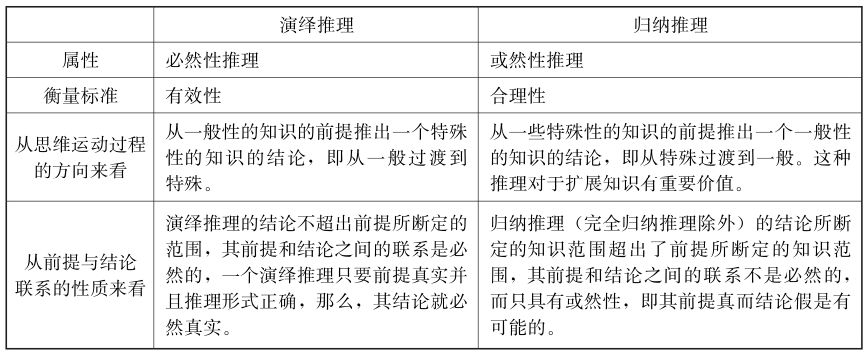
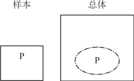
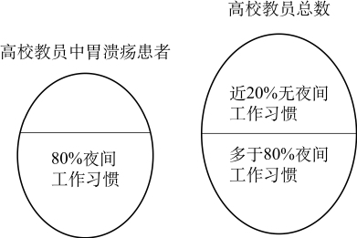

逻辑按推理类型，可分为演绎推理和广义归纳推理（即非演绎推理）。演绎是必然性推理，归纳是或然性推理。在必然性推理中，逻辑研究的核心是推理的有效性，凡是能从真实前提必然得到真实结论的推理，就是有效的，否则是无效的。在或然性推理中，逻辑研究的核心是推理的合理性，即如何提高结论的可靠程度。逻辑归纳是从不同的特定的事件中发展出普遍的原则（定律、定理或原理）的方法。
所谓归纳推理，就是根据一类事物的部分对象具有某种性质，推出这类事物的所有对象都具有这种性质的推理。
归纳推理的前提是一些关于个别事物或现象的命题，而结论则是关于该类事物或现象的普遍性命题。
（一）完全归纳推理
完全归纳推理，又称“完全归纳法”，是以某类中每一对象（或子类）都具有或不具有某一属性为前提，推出以该类对象全部具有或不具有该属性为结论的归纳推理。
其逻辑结构可表示如下：
S1——P
S2——P
……
Sn——P
（S1， S2，……， Sn是S类的所有分子）
所以， S——P
（S表示事物， P表示属性）
比如，当天文学家对太阳系的大行星运行轨道进行考察的时候，他们发现：水星是沿着椭圆轨道绕太阳运行的，金星是沿着椭圆轨道绕太阳运行的，地球是沿着椭圆轨道绕太阳运行的，火星是沿着椭圆轨道绕太阳运行的，木星是沿着椭圆轨道绕太阳运行的，土星是沿着椭圆轨道绕太阳运行的，天王星是沿着椭圆轨道绕太阳运行的，海王星是沿着椭圆轨道绕太阳运行的，而水星、金星、地球、火星、土星、木星、天王星、海王星是太阳系的全部大行星。由此，他们便得出如下结论：所有的太阳系大行星都是沿着椭圆轨道绕太阳运行的。这一结论，就是运用完全归纳推理得出的。
完全归纳推理其实不是真正意义上的归纳推理，从思维方向上说，它是从个别推出一般，在这一点上，它属于归纳推理。但是，其前提所断定的范围和结论所断定的范围完全相同，其结论是根据前提必然得出的，其前提的真能够保证结论的真，因此，完全归纳推理具有演绎的性质。但这里还是按照“完全归纳法”这一名字所显示的，将其归入“归纳推理”的范畴。
【案例】
小高斯做题
德国数学家卡尔·弗里德里斯·高斯10岁那年，在小学上算术课时，老师给班里几十个孩子出了一道算术题，他要孩子们计算一下： 1+2+3+4+…+97+98+99+100=？老师心里想，要加的数目这么多，可得费些功夫，而且稍不留神，就会算错。可是出乎意料的是，老师刚把题目说完，小高斯就举起了手，报出了答案： 5 050。老师非常吃惊，忙问小高斯是怎么算出来的。
小高斯说，他发现这100个数有一个特点，就是依次把头尾两个数加起来都等于101，而这样的数刚好有50对，因此，这100个数的总和就是101×50=5 050。
高斯运用的是完全归纳推理，特点是：前提中考察了该类事物的每一个对象，它的结论是必然的。
运用完全归纳推理必须注意两点：
（1）前提所列举的应当包括该类事物的每一个个别对象，一个也不能遗漏。
（2）作为前提的每一个判断都应当是真的，即每一个个别对象都确实具有某种性质。
如果满足了这两条要求，那么完全归纳推理的结论就必然是真实的。否则，结论就不是必然真实的。
由于完全归纳推理要求对某类事物的全部对象一一列举考察，所以，它的运用是有局限性的，适用范围很小。它只适用于那些对象数目很小的类别，对它们作穷尽的考察。用完全归纳法得出一个全称结论，比较容易。例如某个班组、年级、学校、乡镇的所有人口。但是，假如所考察的那个类虽然是一个有穷类，但对象的数目很大，例如，由所有中国人所组成的类，其成员就有13亿之多，尽管在理论上我们还是可以对这个类作穷尽的考察，例如作一次全国人口普查，但实际操作起来很困难，社会成本太大。更进一步，假如所要考察的对象类是一个无穷类，例如自然数类，原则上就不可能穷尽地检查这个类，因为不管我们检查到哪一步，总有无穷多的对象仍在那里等待我们。对于这类对象，完全归纳法根本不适用，这时就只能运用不完全归纳推理了。
（二）不完全归纳推理
一般意义上，归纳推理指的是不完全归纳推理，不完全归纳推理是这样一种推理：根据对某类事物部分对象的考察，发现它们具有某种性质，因而得出结论说，该类事物都具有某种性质。
【案例】
《内经·针刺篇》记载的故事
有一个患头痛的樵夫上山砍柴，一次不慎碰破足趾，出了一点血，但头部不痛了。当时他没有引起注意。后来头痛复发，又偶然碰破原处，头痛又好了。这次引起了注意，以后头痛时，他就有意刺破该处，都有效应（这个樵夫碰的地方，即现在所称的“大敦穴”）。
现在我们要问，为什么这个樵夫以后头痛时就想到要刺破足趾的原处呢？从故事里可见，这是因为他根据自己以往的各次个别经验做出了一个有关碰破足趾能治好头痛的一个一般性结论。在这里，就其所运用的推理形式来说，就是一个不完全的归纳推理。具体过程是这样的：
第一次碰破足趾某处，头痛好了。
第二次碰破足趾某处，头痛好了。
（没有出现相反的情况，即碰破足趾某处，而头痛不好。）
所以，凡碰破足趾某处，头痛都会好。
由于不完全归纳推理前提和结论间不具有必然性关系，而是或然性的，也就是说，前提真不能保证结论必然真。这是因为，人类受主观和客观条件的限制，所考察的对象数量有限，不可能是无限的，而且单凭观察所获得的经验是不能证明事物的必然性的。
不完全归纳推理具有从已知到未知、从过去到未来的性质，或者说，它们的结论的内容，多于前提包括的内容。因此，人们把归纳推理看作是得到新知识的方法。
发现一类对象中的部分对象都具有某种属性，而且没有发现相反的情况，从而得出所有这类对象都具有这种属性，这是不完全归纳推理，它没有对该类对象的全部个体进行考察而得出某种结论。正因为归纳推理的结论是或然的，而归纳推理结论的可靠性又与观察事物的数量、范围以及对于观察对象的分析程度有着直接的关系，所以，一般来说，观察事例的数量愈多，范围愈大，对于观察对象的分析愈深入，归纳推理结论就愈可靠。
（三）归纳与演绎
除完全归纳推理这一种特殊的归纳推理之外，真正的归纳推理都是不完全的归纳，其结论所断定的知识范围超出了前提所断定的知识范围，因此，归纳推理的前提与结论之间的联系不是必然性的，而是或然性的。也就是说，其前提真而结论假是可能的，所以，归纳推理乃是一种或然性推理。
①前提必须是真实的。
②结论具有或然性。
③结论的真实并不一定为前提所保证。
④结论为真的概率受到前提多少的影响。
归纳推理再好，也不能像演绎推理一样保证结论一定是真，但是，这不表明有把握的可能性和没有把握的猜测之间没有重要区别，更不表明人不应该靠增加经验来增加能力。
归纳推理与演绎推理的主要区别概括如下：

归纳推理与演绎推理虽有上述区别，但它们在人们的认识过程中是紧密联系着的，两者互相依赖、互为补充，比如说，演绎推理的一般性知识的大前提必须借助于归纳推理从具体的经验中概括出来，从这个意义上我们可以说，没有归纳推理也就没有演绎推理。当然，归纳推理也离不开演绎推理。比如，归纳活动的目的、任务和方向是归纳过程本身所不能解决和提供的，这只有借助于理论思维，依靠人们先前积累的一般性理论知识的指导，而这本身就是一种演绎活动。而且，单靠归纳推理是不能证明必然性的，因此，在归纳推理的过程中，人们常常需要应用演绎推理对某些归纳的前提或者结论加以论证。从这个意义上我们也可以说，没有演绎推理也就不可能有归纳推理。
归纳法是通过许多个别的事例，然后归纳出它们所共有的特性。常见的归纳方法主要有两类：一是，简单枚举法;二是，科学归纳法。
（一）简单枚举法
简单枚举法也叫简单枚举归纳推理，是仅根据在考察中没有碰到相反情况而进行的不完全归纳推理。
简单枚举归纳的论证形式如下：
S1——P
S2——P
S3——P
……
Sn——P
（S1， S2， S3，……， Sn是S类部分对象，枚举中未遇相反情况。）
所以， S——P
应用简单枚举归法可以从一些个别事例中推导出普遍的规律性来，然而这充其量只是一种猜测，这种猜测是否正确，还必须进一步加以验证。
我们经常用简单枚举法建立因果连接。当一种现象的许多事例恒常地伴随着一特定类型的事态的时候，我们自然地得出在它们之间存在一个因果关系。
以下都是简单枚举归纳推理的具体运例子：
简单枚举法是在经验观察基础上所做出的全称概括。简单枚举法的不确定性是与概括的广度成正比例关系的。如“所有地球上的天鹅是白的”同“所有亚洲的天鹅是白的”相比，前者的广度更高而不确定性更强，或者说，更容易被证伪。
分析：上面列举了两类事实。
分析：根据同样的样本， 4家不同的基因测试公司得出的测试结果差异极大，从中可合理地引申和概括出这样的结论：基因检测技术还很不成熟，不宜过早投入市场运作。
（二）科学归纳法
人们的认识运动总是从认识个别事物开始，从个别中概括出一般，并进一步从庞杂的经验事实中间，探求了自然界的普遍性原则。自然科学中的很多定律和公式的发现，都离不开科学归纳法。
科学归纳法是在科学实验或科学分析基础上所做出的全称概括，是通过考察某类事物的部分对象，分析并找出这些对象之所以具有某种属性的原因，以研究对象内部的因果联系作根据，从而做出关于某类事物的全部对象都具有某种属性的一般性知识的结论。
科学发现总是通过观察、研究个别事实并对它们进行总结的结果，科学归纳法是人们广泛使用的基本的思维方法，在科学认识中具有重要的意义。
科学归纳法是建立在对事物进行科学分析基础上的不完全归纳推理。具体而言，不是对某类事物的部分对象，碰到那个就考察那个（简单枚举归纳就是如此），而是按照事物本身的性质和研究的需要，选择一类事物中较为典型的个别对象加以考察，通过这种对部分对象的考察而做出某种一般性的结论。不只是根据没有碰到例外相反的情况，而是分析和发现所考察过的某类事物的部分对象何以具有某种性质的客观原因和内在必然性。
上述两个例子在前提中不仅考察了一类事物的部分对象有某种属性，而且进一步指出了对象与属性之间的因果联系，由此推出结论。这就是科学归纳推理。
【案例】
候鸟迁徙
人们早已观察到燕子、大雁等候鸟一年一度春来秋往。每年春暖花开之时，燕雁北飞;每年秋寒叶落之时，燕雁南归。人们自然地把候鸟的迁徙与春秋两季的气候剧变联系起来，应用简单枚举归纳推理做出每年气温转暖候鸟北飞，每年气温转寒候鸟南归的一般性的结论。但是，加拿大洛文教授从1924年起花了二十多年工夫对候鸟迁徙之谜的进一步研究表明：实际上对候鸟迁徙起作用的不是气温的升降，而是昼夜的长短。
洛文观察一种候鸟黄脚鹬，这种候鸟每年来往于加拿大与南美洲阿根廷之间，长途跋涉16 000公里。据他14年的记录,这种黄脚鹬春天在加拿大首次下蛋总在5月26~ 29日三天之内。他考虑到如果温度是主要条件，决不会如此稳定，而在外界的各种可能因素中只有昼夜的长短每年是确定不变的。基于此，他得出了昼夜的长短是候鸟迁徙的原因的结论。
这个结论是运用科学归纳推理分析现象之间的因果联系而得出的，因而具有很高的可靠性。洛文教授又以下述的实验来验证他的观点：
他在1924年的秋天，在候鸟南回时，网罗了若干只乌鸦似的候鸟。他把这些候鸟分为两部分，一部分候鸟放在寻常环境里，这时冬季来临，昼长一天短似一天;而把另一部分候鸟置于日光灯下，人为地将白昼一天天延长。到了12月间，前一部分的候鸟很安静，而后一部分候鸟却大有春意，不但歌唱起来，而且内部生殖器腺系统发育到春天模样。这时把它们放出来，凡是经过日光灯照的统统向西北飞去，好似春天的候鸟一样，虽然这时气温是冰点以下20度;而未经过日光灯照的候鸟大都留在原地。
这个实验证明了昼夜的长短是候鸟迁徙的原因这一结论的可靠性。
简单枚举法依靠的是观察，它的结论依赖于观察例证的数量、分布范围和有没有反例，只要有一个反例，全称结论就被推翻。这样的办法太简单粗糙，缺乏分析思考，只知道积聚数量，扩大范围，从实际操作的角度看既不经济，还浪费人力物力，有时候甚至丧失发现真理的机遇。
因此，我们不能仅仅依靠不断重复的观察，而应该加进分析和思考。当我们观察到一些S具有性质P后，就应思考，为什么这些S会有性质P呢？这时应该进入实验室和研究室，根据当时的科学原理和知识状况，去弄清楚S和P究竟具有什么样的联系，是偶然联系还是本质性联系。如果我们通过科学研究得出结论说， S和P之间必然相互联系着，这时尽管也许只研究了少量的个例，仍然可以有把握地推出结论。可见，科学归纳法是根据某类事物中部分对象与某种属性间因果联系的分析，推出该类事物具有该种属性的推理。
比如，我们在分析一个城市的刑事案件发案特点时发现，在该市的几个点上刑事案件的发案率高于其他地区，而这几个地方都处于城乡结合部，再进一步调查发现城乡结合部社区管理比较薄弱、外来人口相对集中、地域空旷、环境偏僻等情况与发生刑事案件之间存在因果联系，在此基础上，可以得出结论：凡城乡结合部的刑事案件发案率都比较高。
如果仅根据一个城市不同地方的刑事案件发案率的统计数字的比较，就得出凡城乡结合部的刑事案件发案率都比较高这一结论，这种推理就属于简单枚举归纳推理。如果我们不满足于此，而是进一步去探求城乡结合部的发案率为什么会比其他地区高的原因，在此基础上得出凡城乡结合部的刑事案件发案率都比较高这一结论，这就属于科学归纳推理。
（1）科学归纳推理与简单枚举归纳推理的相同点是：
第一，两者都属于不完全归纳推理，都没有考察完某类事物的全部对象。
第二，结论的断定范围超出了前提的断定范围，因此，结论是或然的。
（2）科学归纳推理与简单枚举归纳推理的不同点是：
第一，得出结论的依据不同。简单枚举归纳推理是以经验认识（未遇到相反事例）为依据，而科学归纳推理的依据是分析现象间的因果联系。二者的主要差别是样本属性与描述属性具有同质性的概率不同。
比较而言，在科学归纳法中，样本属性与描述属性具有同质性的概率较高，而在简单枚举法中，样本属性与描述属性具有同质性的概率较低。当然，科学归纳法的结论对反例同样没有豁免权。
第二，提高结论可靠性的途径不同。简单枚举归纳推理是靠增加被考察的对象和扩展被考察的范围来提高其可靠性的;科学归纳推理是从前提的科学分析而获得的结论，其可靠性并不是依靠前提的多少来决定，而是依靠真正抓住事物间的因果联系。
简单枚举归纳推理所依据的仅仅是没有发现相反的情况，而这一点对于做出一个一般性的结论来说，是必要的，但并不是充分的。因为，没有碰到相反的情况，并不能排除这个相反情况存在的可能性。而只要有相反情况的存在，无论暂时碰到与否，其一般性结论就必然是错的。
科学归纳推理则不同，它所根据的是对事物何以存在某种性质的必然原因进行科学的分析，即在对某类中部分对象本质分析的基础之上，从中找出其固有的内在联系，并由这些联系推出有关该类事物的一般性结论。它的特殊表现形式是利用典型事例，由于前提的事例包含了类中决定该事物能否存在的必然关系，因而获得的是一般性规律的结论。因此科学归纳推理得出的结论比以经验为主要根据的简单枚举归纳推理得出的结论要可靠得多。
分析：这是一则用科学归纳法做出的论证，题干断定：
分析：在进行完全归纳推理时，应以对甲、乙、丙、丁和戊等五人因多次吸毒而染上毒瘾的考察作为推理根据，推出“五人都因多次吸毒而染上毒瘾”的结论。或者用戒毒所所长介绍的材料作为推理根据，推出“该所收容的所有被强制戒毒人员都因多次吸毒而染上毒瘾”的结论。
科学归纳在科学认识和科学研究中无疑起着巨大的作用，但它也有局限性，主要表现在：
（1）科学归纳是以直观的感性经验为基础，因而，它不能揭露事物的深刻的本质和规律。
（2）科学归纳只能根据已经把握的一部分事物的某些属性进行归纳，无法穷尽同类事物的全部属性，因而做出的结论不是完全可靠的，带有很大的或然性，也可能有同客观实际矛盾的情况。这种情况一旦出现，原来的结论就会被推翻。
科学归纳法的前提对结论的支持度有多高，结论有多可靠，取决于科学归纳法有多“科学”。由于极其复杂的原因，许多所谓的“科学研究”也有不科学或不尽科学的时候，因此“科学研究”的结论也是可错的，可以修正的。
归纳概括是从特定经验事实中得到一般或普遍命题的过程，具体是指利用不完全归纳，来得出一个虽然并非必然但要相对合理的结论。
归纳概括的形式如下：
现象E的事例1伴随有事态C
现象E的事例2伴随有事态C
现象E的事例3伴随有事态C
…………
因而现象E的每个事例都伴随有事态C。
由一个个的例子推导出一个普遍的结论，是不完全归纳推理中最基本的一种，即归纳概括。当然，归纳概括出来的结论应该恰当。
（一）评估准则
归纳推理作为扩展性推理而言，使用的标准是其合理性。一个人接受某个命题总有一定的理由，一个人从个别可相信的命题出发推导出超出已知命题知识范围之外的新命题，如何来判定其合理性，有许多需要进行研究的内容。合理性的衡量，一个尺度是概率，另一个尺度则可以归结为健全的批判性思维提供的标准。
批判性思维的核心是批判性地提问，评价一个推理或论证也应该是从提问开始的。评估归纳论证的准则可用如下批判性问题来描述：
（批判性问题的英文名为Critical Question，以下统一简称为“CQ”）
CQ1.前提是否真实？
归纳推理首先要满足前提可靠的标准。
如果归纳的前提不真，实验的证据不准确，那么归纳的结论就毫无可靠性。
CQ2.前提和结论是否相关？
前提和结论是否相关，由它们谈的是否是同一种东西来决定。若前提和结论不相关，那么归纳的结论就毫无可靠性。
要注意有没有混淆或偷换了概念。需要洞察概念的不同解释对得出结论的关键影响。
CQ3.结论是什么？结论的范围是否受到适当限制？得出的结论是否恰当？
调整结论的强度，谨慎下绝对肯定或绝对否定的结论。
和其他推理一样，归纳推理的充足性还与结论的范围和强度有关。对同样数量的前提，结论的变化会导致支持的“充足性”变化。在同样的前提下，结论范围大小和可靠性成反比。“太阳永远升起”和“太阳明天会升起”，在过去同样的经验下，后者要更可靠，因为它只涉及明天。
CQ4.有没有发现反例？
为提高枚举归纳推理或统计推理结论的可靠性，要注意考察可能出现的反例。一旦发现反例，结论就会被推翻。这就是所谓的“证伪”。“证伪”的目的就是杜绝“以偏概全”的错误。若没有发现与结论相关的反例，结论的可靠性就越高。若发现了反例，就要修改结论。
CQ5.所举的例子的数量是否足够大？
即考察对象的数量是否足够大。样本容量是否足够大。
要尽可能增加被考察对象的数量，被考察对象的数量越多，样本容量越大，越是接近全部对象，那么结论的可靠性程度也就会越高。
归纳支持不充足的问题首先出现在前提的数量上。依靠的事例太少，不可能成为充分的推理。明显地，基于过少的样本所做出的概括是容易犯错误的，以少数例子做出的推理往往会犯“以偏概全”和“轻率概括”的谬误。
我们需要考虑足够大的样本容量，也就是样本内所含个体的数量要足够多，才能确立我们对所做出的概括的信心。
CQ6.考察对象的范围是否足够大？
即所举的例子是否多样化，样本的个体之间差异是否足够大。
归纳结论的可靠性程度不仅建立在枚举事例的数量上，而且还取决于枚举事例分布的范围。样本个体之间的差异通常能反映样本个体在总体中的分布状况，样本之间的差异越大说明样本个体在总体中的分布越广。因此，要尽可能调动考察对象的视角和范围，尽量在不同的时间、地点、场合和条件下去考察同类对象，样本的个体之间差异越大，那么结论的可靠性程度也就会越高。
分析：上述科学家的观点是，宇宙一定在不断膨胀。理由是，天文观察发现，大多数星系都有“红移”现象，而这一现象表明，物体远离地球。这则论证存在着严重的缺陷，若事实上，人们所能观察的星体可能不足真实宇宙的百分之一，这表明考察对象的范围较小，意味着由天文观察而归纳出的观点很可能不可靠，这就有力地质疑了科学家的观点。
CQ7.所举的例子或样本是否具有代表性？
即观察到的事物和属性有什么关系。
研究事物和属性的内在关系或者因果关系，这是科学的专注点。从逻辑上说，样本代表性是指样本属性与结论所概括的总体属性应当具有同质性。样本属性与描述属性具有同质性的概率越大，结论的可靠性就越大。
如果一个总体中的所有个体在某一方面都有相同的属性，那么任意一个个体在这方面的属性都有总体的属性。
（二）归纳不当
归纳推理的结论并非是从前提中必然推出的。归纳法虽然有着自己的独特作用，但是，它的前提和结论之间的逻辑联系具有或然性，所得出的结论并不可靠。由前面分析可知，提高归纳推理可靠性的办法有：
①前提必须真实；
②前提和结论要相关；
③结论的范围受到适当限制；
④没有发现反例；
⑤尽量增大考察对象的数量；
⑥尽量增大考察对象的范围；
⑦所举的例子或样本要具有代表性。
在进行归纳推理时，如果只根据若干还不够充分的事实仓促地推出一般性的结论，把它看作完全可靠的，就会犯 “归纳不当”的错误。其谬误实质是严重忽视了与样本属性相反的事例存在，常见的表现形式有特例概括、机械概括和轻率概括。
特例概括，也叫举例不当，是以特例为根据，仅由不具代表性的例证或缺乏典型性的事例就不恰当地进行概括，得出包含该个体的群体具有的普遍性质的结论。其谬误是以概括所依据事例的非典型性和偶然性为主要特征。
机械概括是由于忽视时间因素的影响，机械地以样本属性为根据，而对事物的现在或未来做出概括。
分析：文中提到，“未来十年内，中年人口数将会剧增。”这意味着两方面的变化：一方面是目前的中年人将陆续退出中年人的行列；另一方面是目前年轻人将陆续加入中年人的行列。“中年人口数的剧增”意味着后一方面的变化加剧，今天的年轻人在未来的中年人中所占的比例不断加大。由此，文中的推论若成立，就必须假设：今天的年轻人在步入中年的时候，他们在消费方式上的变化只受年龄增长这种单一因素的影响，而且变化的结果必须与现在中年人的消费方式相同。显然，这种假设是不一定成立的。该论证将目前两组消费整体所具有的样本特征，机械地推广到未来，这一推论是在没考虑目前的样本特征可能会在未来发生变化的情况下做出的，所以，该论证犯了机械概括的错误。
轻率概括从狭义上讲，也叫样本太小，是以少数的不具有代表性的事例就匆匆归纳出普遍性的结论。其谬误在于由于样本太小，不能满足在样本容量方面的要求，而使样本缺乏代表性，由此，不足以概括出代表总体特征的结论。
需要注意的是：
第一，样本可能太小这一事实不一定意味着样本就是不典型的。如果较小的样本在一个很大的总体中具有典型性，这样的概括不是谬误。只有对太小而且不典型的样本进行概括，才犯了轻率概括的谬误。
分析：这则论证没有犯轻率概括的谬误，因为在这则论证中，样本在它所属的总体中具有典型性。小老鼠在两分钟内死亡的事实表明：在吃T物质与小老鼠死亡之间存在因果联系。如果存在这种联系，那么其他小老鼠吃了T物质也会这样。
第二，从另一个角度说，样本大不一定能保证样本就是典型的。在样本较大的情况下，如果样本不是随机选取的，它在一个很大的总体中可能就没有典型性。
分析：尽管这则论证中引用的样本是很大的，但其调查的抽样不是随机进行的，该论证还是犯了轻率概括的谬误。有80%的加州选民说他们会投共和党候选人的票，这说明共和党候选人在加州具有压倒性的优势，但它不能反映全国其他地区选民的投票倾向。
（三）案例分析
分析：上文是通过枚举归纳论证，列举了7位“0”结尾年份竞选成功的美国总统都死在任期内，得出了美国总统存在“0年魔咒”这一结论，其结论的可靠是值得怀疑的。由于枚举归纳论证其结论所断定的范围超出了其前提所断定的范围，该前提与结论之间的联系不是必然的，因而，它的结论是或然的。其论证缺陷可从得出的结论不够恰当以及存在反例等方面来考虑。
分析：上文是则归纳论证，存在轻率概括、片面推论等缺陷。
统计推理是利用统计数字进行的推理，作为最为常见的推理形式之一，统计推理被广泛地应用于政治、经济等各个领域及日常生活中。
统计推理是由样本总体具有某种性质而推出对象总体也具有该种性质的归纳推理。最典型的统计推理就是统计推断，是由样本具有某种属性的单位频率（百分比）推出总体具有某种属性的概率（可能性）的推理。
概率，亦称“或然率”，它反映随机事件出现的可能性大小。随机事件是指在相同条件下，可能出现也可能不出现的事件。假设对某一随机现象进行了n次试验与观察，其中A事件出现了m次，即其出现的频率为m/n。经过大量反复试验，常有m/n越来越接近于某个确定的常数（此论断证明详见伯努利大数定律）。该常数即为事件A出现的概率，常用P（A）表示。研究支配偶然事件的内在规律的学科叫概率论，属于数学上的一个分 支，概率论揭示了偶然现象所包含的内部规律的表现形式。
【案例】
莎士比亚的猴子
1909年，波莱尔在一本谈概率的书中提出了无限猴子定理。关于此定理的叙述为：有无限只猴子用无限的时间会产生特定的文章。
因为在无穷长的时间后，即使是随机打字的猴子也可以打出一些有意义的单词，可以类推，会有一个足够幸运的猴子或连续或不连续地打出一本书，即使其概率极其小。但在极其长的时间后，其发生是必定的。根据该定理推测，如果无数多的猴子在无数多的打字机上随机打字，并持续无限长的时间，那么在某个时候，它们必然会打出莎士比亚的全部著作，这可以用严谨的数学推导来证明。
不过在现实中，猴子打出一篇像样的文章的概率几乎是零，因为科学家经过反复试验后发现，猴子在使用键盘时通常会连按某一个键或拍击键盘，最终打出的文字不可能成为一个完整的句子。2003年，一家英国动物园的科学家们“试验”了无限猴子定理，他们把一台电脑和一个键盘放进灵长类园区。可惜的是，猴子们并没有打出什么十四行诗。根据研究者的说法，它们只打出了5页几乎完全是字母“S”的纸。
然而，在离1909年约100年后，在谷歌AI系统的机器学习代码中，莎士比亚的猴子展露神迹。尽管谷歌并未让一只猴子敲键盘打造出莎士比亚的著作，但被视为“莎士比亚猴子”的AI已经能够开始写出诗歌了。
这让人类开始重新思考自我，重新审视这只可以创造无限可能的莎士比亚的猴子。拥有智慧和情感是人类生而为人的骄傲，我们一直认为绚丽的诗句是独属于人类文明的最美结晶，但在概率论的逻辑中，这一切只是猴子们的一个随机动作。
（一）统计基础
如果被调查的某群对象的数量规模相对于我们的考察能力太过巨大，我们往往会采用先取样，再进行统计推理的方法。
统计推理是从样本过渡到总体的推理，是从总体中抽取部分样本，通过对抽取部分所得到的带有随机性的数据进行合理的分析，进而对总体做出合理的判断，它是伴随着一定概率的推测。
统计中的重要概念主要有：对象总体、样本、统计属性、抽样和样本的代表性
（1）对象总体
所谓“总体”，就是被调查的某群对象的全体。对象总体是研究对象的全体，即统计推理的结论所涉及的对象的集合。
（2）样本
被检验的部分称为样本，样本总体是被考察的对象的全体。统计推理的本质就是根据样本总体的性质来推断对象总体的性质。
（3）统计属性
所考察的样本个体中，有些具有P属性，有些不具有P属性，我们把具有这部分特征的样本属性叫作样本的统计属性。
（4）抽样
所谓“抽样”，就是从对象总体中选取样本总体的过程。抽样的方法对于统计推理的结论来说至关重要。如果抽样方法不合理，统计数据再准确，它对统计推理的结论也没有说服力。
（5）样本的代表性
要提高统计推理结论的可靠程度，关键在于从对象中抽选出的样本具有代表性。抽样的代表性，是指被调查的对象能够反映其他未被调查的对象的性质。
当我们在关于样本信息的基础上，得到关于全体的结论，我们就是在做统计推理。统计推理的形式如下：
（1）统计推理的一般结构
前提：样本有属性P
结论：总体有属性P
（2）统计推理的具体结构
具体而言，统计推理是在一定数量的事物A（作为样本）中发现有若干百分比的A有属性P，然后归纳为在所有的A中也有这样百分比的A有属性P。
统计推理的结构表达形式一：
前提：在若干个A的样品中观察到有x%的A有属性P
结论：所有的A中有x%的A有属性P
统计推理的结构表达形式二：
前提：样本S的x%有P属性
结论：总体A的x%有P属性
在以上形式中，“x%有P属性（1<x<100）”表示被考察样本S和总体A的统计属性。
（3）统计三段论的推理结构
统计三段论是统计概括的逆转形式。推理结构如下：
前提：总体A的x%有P属性
前提：这个（这些） a属于总体A
结论：这个（这些） a可能有P属性
（二）统计概括
统计概括指的是针对统计推理而概括出结论。由于统计推理是从样本过渡到总体的推理，即由样本具有某种属性的单位频率或百分比推出总体具有某种属性的概率或可能性的推理，因此，在进行统计推理和概括时，要尽量做到抽样要科学、数据应用要合理、概括出的结论要恰当。
分析：根据以上研究，可合理地概括出的结论是，快乐的生活往往是社交性的、谈话深入的，而不是孤独和肤浅的。
分析：
概率基本常识是，当次数足够时，随机事件发生的频率与它们的概率将无限接近，而次数越少，随机事件发生的频率越有可能偏离其概率。比如乡镇小医院某一周只出生了一名女婴，则该周女婴所占比例就是100%。根据上面的论述，由于乡镇小医院每周只有少量婴儿出生，而城市大医院每周有许多婴儿出生。因此，一周出生的婴儿中女婴或男婴的比率，乡镇小医院比城市大医院偏离正常概率的可能性要高得多，即可合理概括出的结论是，非正常周出现的次数在乡镇小医院比在城市大医院更多。
统计推理属于不完全归纳推理，其结论所断定的范围超出了前提所断定的范围，前提与结论之间的联系不是必然的，因而，它的结论是或然的，不一定可靠，其推理的可靠性需要进行必要的评估。
（一）评估准则
在现实的生活中，我们每个人都会遇到大量的统计推理。能否正确地评估统计推理会直接影响到人们是否能对其所遇到的各种观点、意见做出合理的判断。为此，统计推理是批判性思维的重要考察对象。虽然统计学作为一门独立的学科，其专业的统计理论和技术对于大多数并非以统计为职业的人来说是复杂而又枯燥的，但懂得一些评价统计推理的原则和技巧，使我们能够对日常遇到的统计推理做出合理的评价非常必要。
评估统计推理与论证的准则可用如下批判性问题来描述：

CQ1.明确结论问题：结论是什么？
要弄清楚结论。需要注意的问题有：
（1）论题或结论中说了什么和没说什么？
（2）是否明确了结论中的具体概念？是否混淆或偷换了概念？
结论是指关于事实或价值观念的判断，它反映了说话人对某个问题的看法。在看书报或与别人谈话时，我们是不是经常问自己，作者（或说话人）想要我们接受的是什么，只有把论题和结论从说话人的一大堆话语当中抽取出来，并弄清对方的意图，我们才能对他的论证做出冷静而理智的思考。
要评价统计推理，还必须弄清楚论题中没说什么。善于布置语言陷阱的人常常会诱导听话者将一些想象的成分加入论题或结论之中。这些成分并不是论题或结论中明确表示出来的，而是听话人自己加进去的。
CQ2.数据意义问题：统计数据有何含义？
要分析前提中的统计数据的含义，需要注意的问题有：
（1）数据能否说明问题？——揭示能说明什么问题，是否存在数据理解的陷阱。
（2）是否遗漏了什么？——揭示相关因素和比较基础。
（3）这个资料是否有意义？——揭露统计数据赖以建立的未经证实的假设。
分析：上述论证是根据近十年来某省患肺结核死亡人数比例增高，得出结论，该省对患肺结核的防治水平降低了。这一论证是值得怀疑的，若事实上，该省的气候适合肺结核病疗养，很多肺结核患者在此地走过最后一段人生之路。这表明，该省患肺结核死亡人数比例增高是另有别的原因，这就严重地削弱了题干的结论。
分析：上述论证是有明显漏洞的，要说明参与“非典”治疗是否比日常医务工作危险，关键不是医务人员死亡人数的比较，而是死亡率的比较。如果事实上，医务人员中只有一小部分参与了“非典”治疗工作，则参与治疗“非典”的医务人员的死亡率（7/参与治疗“非典”的医务人员人数）可能明显高于未参与“非典”治疗工作的医务人员死亡率（10/未参与“非典”治疗工作的医务人员人数）。
CQ3.数据可信度问题：统计数据从何而来？
要分析前提中的统计数据的可信度，需要注意的问题有：
（1）说话人或作者从何种途径知道这些统计数据的？——揭示资料来源的正当性。
（2）该统计数据是谁说的？——验证数据来源的权威性。
（3）该统计数据是如何得出的？——检验样本与统计方法。
在日常生活中，对于遇到的统计推理，人们常常无法确知推理中用到的数字是怎么得到的。比如，在书报中看到统计数字，由于读者无法与作者直接交流，因而也无从了解这些数字的获得途径。在这种情况下，有些人会给他们所遇到的数字画一个问号，而不是毫无保留地接受它们，这样的做法是明智的。
分析：若发现，近20年统计中的干部许多是企业干部，以前只包括政府机关的干部。这意味着很可能是统计口径扩大才造成统计中北大学生中干部子女比例增加的，这就有力地质疑了媒体的观点。
CQ4.样本代表性问题：样本是否能真正代表总体？
评价统计概括，也一样要看前提和结论之间的关系，以及支持的充分性。统计推理的可靠性主要取决于样本有代表性。只有从能够代表总体的样本出发，才能得到关于总体的可靠结论。使用样本所产生的问题与这个样本能否代表总体有关，不能代表总体的样本被称为偏颇的样本。
分析：这一调查的问题在于，这20个词语是否具有代表性，如果这20个词语是易读错的词语，题干结论就不可靠。
分析：
这一统计推理是荒谬的，因为这个样本不具有代表性。因为在职人员的年龄一般不超过60岁，在职期间如果死亡，往往属于英年早逝，这个样本不能代表一般的知识分子的情况。类似的统计推理谬误，比如，在调查大学生平均死亡年龄是22岁后，得出惊人结论：具有大学文化程度的人比其他人平均寿命少50岁。因为在校大学生通常是20岁左右的青年，如果死亡，大多数属于非正常死亡，这个样本不能代表一般具有大学文化程度的人。
CQ5.反案例问题：是否发现不具有原样本属性的其他样本？
若没发现相反的案例，即没有发现不具有原样本属性的其他样本，则结论的可靠程度就高。若存在相反的案例，即发现了不具有原样本属性的其他样本，即相反的案例越多，则结论的可靠程度就越低。
CQ6.数据应用问题：统计数据应用是否合理？
分析统计推理的数据应用是否合理，需要对统计数据与结论进行如下评估：
（1）说话人或作者是如何运用统计数据得出结论的？是用什么方式叙述这些数据的？
（2）统计数据与结论是否相关？相关度如何？统计数据是否能支持结论？
（3）说话人或作者是如何使用统计数据的？统计数据是否进行了比较？是否设定了供比较的对象？是否设定了比较的根据或基础？
（4）从这些统计数据中可以推出什么结论？得出的结论是否恰当？
（5）说话人或作者有没有对统计数据做出引申？引申的适当程度如何？
分析：这一理由显然是不足的，漫游费下降了不等于通话费等别的收费下降，而且，原来的漫游费太高了，即使下降了百分之六十三，也不能认为就一定低了，也许漫游费本不应该收，早该取消了。
分析：单看这个新闻标题，给人的印象是中国人，至少是广州人的新生儿有八成非亲生。但是，你仔细读这篇新闻，却发现远不是那么回事。新闻内容说的是：“广州医学院第三附属医院几乎每年都会收到400例左右的亲子鉴定申请，结果有八成左右的丈夫发现，妻子怀上的小孩并非亲生。”可见，“八成”涉及的总体事实上是做亲子鉴定的人，并不能代表广州医院将要生产的所有待产孕妇。仔细想想，在这些做亲子鉴定的人中，八成非亲生的结果其实也并不奇怪。一般来说，去做亲子鉴定都是有原因的，怀疑非亲生才会去做亲子鉴定。一般来说，有重要的根据才会提出这种怀疑。所以，某医院的亲子鉴定结果八成非亲生这是可能的，因为“非亲生”与“做亲子鉴定”有强相关。但是，如果把这 “八成非亲生”的结论推广到大众之中，就变成明显的谬误了。
分析：题干中的第一个统计数字似乎说明飞机比汽车安全，第二个统计数字似乎说明汽车比飞机安全，而题干又断定这两个统计数字都正确，这似乎存在矛盾。其实题干的结论并不矛盾，因为飞机和汽车的速度明显不同。在不知道二者的速度或速度比的情况下，只以运行距离为单位，或者只以运行时间为单位无法比较二者的安全性。
分析：上述研究发现揭示的意思实际上是，在患肺癌的建筑工人中有90%的经常感受到压力。这并没有说肺癌患者中建筑工人所占的比例，因此推不出结论。只有假设，经常感受到压力的肺癌患者有90%是建筑工人。那么根据王强是一名经常感受到压力的肺癌患者，才能推出：王强很可能是一名建筑工人。而这一假设未经确认，因此，该论证存在漏洞。
（二）科学抽样
统计推理的可靠性取决于统计证据，日常经验中所遇到的统计证据并不包含诸如随机性、抽样误差、获取样本的条件之类的因素。在缺少这类信息的情况下，想要对这些证据进行评估，人们必须使用他们最好的判断力。
可靠的统计证据通过科学抽样而搜集，核心问题是样本的代表性。错误抽样的谬误指在做出归纳概括过程中抽样不合理而导致样本不具代表性所产生的谬误，因此，评价统计调查的结果时应当尽可能地考虑到影响样本代表性的各种因素。
为了保证样本的代表性，人们一般从三个方面对抽样过程提出要求：抽样的规模、抽样的范围和抽样的随机性。
（1）抽样规模应当尽可能地大
样本容量越大，样本就越具有代表性，结论的可靠性就越大。
样本容量也叫样本数量、样本大小，这是决定样本是否具有代表性的一个重要因素。和简单枚举归纳一样，统计推理的样本数量，即例子的多少，对推理的可靠性产生影响。给定一个随机选取的样本，这个样本越大，它就越接近于复制总体，例子越多，结论可能越可靠。
在统计学中，这种近似程度是用抽样误差的术语来表达的。抽样误差是某个特征在样本中出现的相对频率与该特征在总体中出现的相对频率之间的差别。如果所取的样本越大，则误差会越小。样本的大小应该随着总体的大小和可接受的抽样误差程度而变化。
现在的很多统计调查，在样本的大小方面就不能达到这个要求，小样本往往不能反映对象总体的性质，样本数量太少，误差可能太大，就不能代表全体的类别，将使统计数字无效，从而归纳无效，也即通过太小的样本推出的结论很可能不反映全面的情况，是偏颇的结论。很多统计调查的报道，都没有给出关于样本大小的信息，这时，除非是有信誉的权威调查机构做的报道值得信任，不然你就应该采取保留的态度。
需要注意的是，样本太少或样本太小的谬误，是指绝对量太小，而不是相对量太小。根据统计学的要求，对总体抽样做出判断的准确程度主要是看抽样是否有代表性，而不是看样本占总体的比例是否足够大（当总体很大时，此比例往往很小）。因此，从统计学的观点，抽样比例小也不足以对题目的结论提出有力的质疑。比如，调查北京市民喜欢收看什么样的电视节目，以我们一个小区来作样本，则绝对样本太少。但如果你在北京市科学地抽样千分之一，其统计出来的结论就能可靠地说明问题。
【案例】
北京癌症发病率25%不实
日前，网友“红墙下的猫”的一则微博引发网友强烈关注，他称“北京癌症发病率惊人，需要流行病专家关注。我是1977年入学1982年毕业，大学本科同班同学在京工作30多人，现有8人患癌症。他们分别来自北京友谊医院、北京同仁医院、北京天坛医院、北京复兴医院和北京佑安医院。他们当中肺癌1人、乳腺癌3人、白血病2人、子宫内膜癌1人、皮肤癌1人。而毕业出国就业者20余人无一癌症。”
北京癌症发病率真的那么惊人，高达25%吗？昨日，北京市肿瘤防治研究办公室副主任王宁表示，北京市55~ 60年龄组癌症发病率是391. 17/10万; 60~ 65年龄组是541. 87/10万; 65~ 70年龄组是766. 54/10万，而美国总体为500/10万，老年组高于北京。据介绍，北京市2011年癌症新发病例38 448例， 5年生存率37%;而该微博博主所发事例的样本量太小，“25%太偶然了，哪个医院医务人员全院统计也不会这么高。”
（2）抽样范围应当尽可能地广
样本范围越广，样本就越具有代表性，结论的可靠性就越大。
统计归纳是以选取和研究“样本”开始，将样本中表现的百分比推论到全部同类事物上，这种推论的成败就在于样本是否代表总体的特点、状况。通俗地说，样本的“代表性”指总体中包括什么类型的成员，样本中也应该包括，而且比例要相当。这就是说，任何合理的统计推理，样本都要反映总体中的有关类别及其比例。
比如，总体中有十个有关的类别，样本中也应该有同样的十个;每一个类别在总体中占多大比例，在样本中也应一样。这样，你才能使你的“样本”“代表”你的“总体”，这样你得出的结论也有代表性。
【案例】
列车采访
某记者在列车上采访：
记者：这位乘客，您买到火车票了吗？
乘客甲：买到了!
记者：旁边这位呢？
乘客乙：买到了。
接着，为增强说服力，记者在列车上随机采访了十几个人，高兴地发现：大家都买到了回家的火车票。
上述记者的调查范围显然过小，只调查了列车上的乘客，这些乘客当然是绝大多数都买到了火车票。由于记者没有调查社会大众，这个调查显然不能说明火车票好买。
样本的代表性是一项必须严格遵守和检查的标尺。样本的代表性和统计归纳结论的准确性有直接的关系。美国权威的民意调查机构关于选举的统计归纳之所以能如此准确，首先在于它们在选取样本时，按比例反映选民的年龄、性别、种族、贫富、职业、地区、信仰、教育等因素。
不合理的统计归纳，多半在代表性上有缺陷。抽样范围过窄也会使样本失去代表性，如果抽样的范围过窄，那么统计数据不足为凭，就会犯“偏向样本”的错误。
（3）样本的选取应当是随机的
样本与总体的相关性越大，样本就越具有代表性，结论的可靠性就越大。
统计推理的合适性是保证样本不能有偏向，即要完整代表全体的类型分布。如何达到这个目的呢？关键在于选取样本的方法不能有偏向。概率抽样这个概念可用来描述样本与总体的相关性，如果样本是根据总体的不同性质选择恰当的随机抽样方法选取的，那么样本与总体就有相关性，并把它称为统计相关。
随机样本是总体中的每一个成员都有相等的机会被选出的样本，随机选取应该是在不同类别的例子都存在的场合下随便选取样本。科学中有专门的程序和方法来保证随机，比如运用随机的数学程序产生号码来选取。随机抽样的方法包括：简单随机抽样、分层随机抽样和系统随机抽样。
人们之所以将网上进行的所谓“民意调查”判为非科学的，是因为网上的样本没有代表性，调查者往往无法控制调查对象，不能确定究竟哪些人会接受他的调查。
【案例】
近7成北美中国留学生希望回国工作和长期居住
北美洲某国际交流中心今日公布的一份调查报告显示，近七成受访的北美中国留学生希望回国工作和长期居住，美国已不再是理想的工作与居住之地。
清华大学深圳研究生院等中国三所高校与科研单位八月底至九月初在多伦多、纽约、波士顿、旧金山召开了四场海外高层次人才招聘面试活动，这份报告是针对出席上述活动的中国留学人员所做的问卷调查得出的。
上述统计结论显然具有偏颇性，该样本不是随机选取的。因为受调查者是参加人才招聘面试活动的，这些调查对象希望回国工作和长期居住的比例当然高，但不能代表北美所有的中国留学生。
保证样本的代表性的方法是“随机”选取，随机选取样本这一要求适用于几乎所有的样本。随机的意思是没有偏向地选择样本，即不是有意地、有倾向地专门选取某一方面的代表，而是每个人都有同样的机会被选上。下面所列的一些因素也影响着样本选取的随机性。
（1）调查者的偏见
调查者的偏见会影响到抽样的随机选取，从而对调查的结果产生直接的影响。样本的选取应当是随机的，要求选取样本时不应带有主观偏见，主观偏见对于样本的随机性具有很大的影响。抽样调查之所以要随机进行，主要是为了避免主观因素对调查结果的客观性的影响。调查者的主观偏见除了影响抽样的随机性之外，还会以其他方式影响调查结果的代表性。由于抽样过程、调查时提出的问题等都有可能渗入提问人的主观偏见，因此，加进了调查者主观偏见的抽样调查很难反映真实的客观情况。
（2）调查方式
人们容易忽略的另一个因素是调查方式，在问卷调查中，调查者的提问方式和措辞会直接影响到调查的结果。比如，假使学生对“你有多少异性伙伴”的问题不明确，那么得出来的70%的比例就不准确。有的学生可能把单纯的异性朋友算在内，有的可能指有性关系的男女朋友。问题的设计准确、清楚、直接、一致、全面的性质，是得到准确、有意义的信息的一大关键。
（3）心理因素
心理因素对样本是否具有代表性也会有影响。心理影响的一个根源是调查者与回答者之间的个人相互作用。一方面，对调查者来说，如果想要一个自己喜欢的结果，在提问表述、可选择的项目，甚至问题的次序安排上做文章，会很有效果。政客或商业推广常常用这样的技巧来操纵民意调查，并以此反过来影响民意。另一方面，从被调查者来说，如果认为他们所给出的回答的不同会使他们得到或失去某些东西，那么可以预见，这些人将影响结果。
为防止这种相互作用影响结果，科学研究通常是在“双盲”条件下进行的。在这种条件下，无论调查者还是回答者都不知道“正确”的回答是什么。（双盲是指，研究对象和研究者都不了解试验分组情况，而是由研究设计者来安排和控制全部试验。其优点是可以避免研究对象和研究者的主观因素所带来的偏倚。）
（三）统计谬误
统计谬误指的是在使用统计数据作论据时所产生的错误，即运用统计推理时未能满足特定的相关条件而导致结论的可信度降低的谬误。常见的统计谬误有以偏概全以及统计数据应用方面的各种错误。
以偏概全是运用统计推理时容易出现的逻辑错误，属于统计中的轻率概括，是根据部分具有的属性概括了整体的属性而导致的谬误，是由于忽视样本属性的异质性，或者根据有偏颇的样本所做出的概括。以偏概全主要有两种表现形式：
一类是小众统计或统计不全，是指以少数样本为根据，即只指出个别或少数数据，就仓促引申出一般结论的错误论证。小的样本不足以反映总体的特性。仅根据几个具体事例就得出绝对的结论，这样的推论是极不可靠的。由于概括出一般结论所依据的样本太少，则发现反例的机会甚大，样本不足以支持一般性结论。
另一类是样本偏颇，是由于抽样不当而导致的偏颇样本的谬误。影响统计推理结论的可靠性的不仅仅是调查对象数量，调查的范围也很重要。就统计对象的整体而言，虽然在某个局部范围内的统计样本是有代表性的，由于忽视了对其他部分的调查统计，从统计对象的总体上看仍然是样本偏颇或不具有代表性。
分析：该调查的样本仅仅来自于巴黎的快餐厅，在巴黎快餐厅吃饭的人就餐偏好不能代表巴黎市民的就餐偏好。
分析：喜欢京剧艺术与学习中国传统文化不是一回事，不能以不喜欢京剧之“偏”概对中国传统文化的态度之“全”。
分析：上述统计谬误产生的原因是，调查者通过打电话进行的调查，调查样本只代表了那时能够安电话的人，而当时电话远没有现在这样普及。
幸存者偏差也叫生存者偏差或存活者偏差，指的是只能看到经过某种筛选而产生的结果，而没有意识到筛选的过程，因此忽略了被筛选掉的关键信息。若统计样本中的数据都是“幸存者”的，那以此做出的概括就属于“以偏盖全”了。
幸存者偏差属于典型的样本偏颇，其谬误产生的原因是取得信息的渠道，仅来自于幸存者时（因为死人不会说话），此信息可能会存在与实际情况不同的偏差。比如，媒体调查“喝葡萄酒的人长寿”。一般是调查了那些长寿的老人，发现其中很多饮用葡萄酒。但还有更多经常饮用葡萄酒但不长寿的人已经死了，媒体根本不可能调查到他们。
可见，“幸存者偏差”只关注到幸存者（即好的一面），而未关注到未幸存者（即不好的一面）。这是一种逻辑谬误，意思是只能看到经过某种筛选而产生的结果，而忽略了被筛选掉的关键信息。
如何避免幸存者偏差呢？最好的办法当然是让“死人”说话。双盲实验设计和详细全面客观的数据纪录都是应对“幸存者偏差”的良方。所谓“兼听则明”也是这个道理，抛掉对个案的迷信，全面系统地了解才能克服这个偏差。
（四）统计质疑
统计论证关键在于样本的代表性，影响样本代表性的三个因素有样本的大小、范围和抽样的随机性。错误抽样的谬误指在做出归纳概括过程中抽样不合理（如抽样片面、样本不具代表性等）而产生的谬误。
如果统计论证的推理中出现了以偏概全这种逻辑错误，质疑该统计论证的主要方式就是拿出理由，指出样本是特殊的，偏颇的，不具有代表性。
分析：上述推理是由一个统计事实“大学的附属医院抢救病人的成功率比其他医院要小”，而得出一个解释性结论“大学的附属医院的医疗护理水平比其他医院要低”。这个结论是建立在将两个具有不同内容的数字进行不恰当比较的基础上的。要削弱这则论证，就要指出样本（质）不同。若去大学附属医院就诊的病人的病情，通常比去私立医院或社区医院的病人的病情重，因此，显然不能根据大学的附属医院抢救病人的成功率比其他医院要小，就得出大学的附属医院的医疗护理水平比其他医院要低的结论。这就有力地驳斥了题干的论证。
分析：上述推理，根据被送到兽医诊所看病的20只受石油溢出影响的水鸟只死了一只，得出结论，接触过石油溢出的水鸟有95%的存活率。若发现，只有那些看起来有很大存活率的水鸟才被带到兽医诊所，这意味着这20只受石油溢出影响的水鸟具有特殊性，也即样本没有代表性，这就有力地反驳了关于水鸟存活率的调查结论。
分析：上述论证是通过调查发现，网恋离婚率远低于平均离婚率，从而得出结论，网恋在成就稳定的婚姻方面很靠谱。这一论证是有缺陷的，若事实上，被调查对象（即网恋）的结婚时间比较短，这意味着，网恋的离婚率与平均离婚率不具有可比性，这显然使上述结论的成立受到了严重的质疑。
分析：上述论证由20到21岁女性入学比例的变化，推出在大学中女生所占比例上升。这则论证涉及统计数据的误用，大学招收的20到21岁的女性占所有20到21岁女性的比例由11%增长到30%，并不意味着招收的女大学生占所有被招收大学生的比例也由11%增长到30%。针对这一统计数据的误用提出的焦点问题是，在该年龄段的男性中，接受高等教育的比例。如果招收男生的比例足够高，那么女生占学生总数的比例未必上升，如果招收的男生比例足够低，那么可以推出招收女生的比例上升了，因此，这一信息对评价题干的论证非常关键。
分析：上述结论认为严格的枪支管控无助于减少暴力犯罪。理由是，实施枪支管控的州的犯罪率比其他州高。这一理由是靠不住的，因为，枪支管控的效果不应该是与其他城市的比较，而应该是比较枪支管控前后同一城市的暴力犯罪率。若事实上，自1986年以来，实施严格枪支管控的这些州的年度暴力犯罪数持续下降，则说明严格的枪支管控有助于减少暴力犯罪。
分析：上文是一则统计论证。统计数据需要比较才有意义，结论不能从单方面的数据来认定。上文只列举了一组与飞机相关的安全数据，没有列举与火车等地面交通的安全数据的对比。而且，该作者没有明确比较的基础，是不能笼统地得出“乘坐飞机出行的安全系数是最高的”这一结论的。
分析：上文是一则统计论证，存在多处论证漏洞。
统计推理的作用在于，在现实生活中，人们常通过调查对象的统计性质来分析研究各种问题。为了评价统计论证，我们必须能够解释它们所依据的统计数据。
统计数据主要是指统计活动过程中所取得的反映经济和社会现象的数字资料，包括平均数、百分比、相对数量与绝对数量、比率、概率及其他样本数据。很多人都认为，数字是客观的，用数字说话是有说服力的。但需要注意的是，数字背后是可以有陷阱的，利用客观的数据可以安排种种陷阱，使我们在不知不觉中陷入圈套。所以，我们不要被那些看似有道理，实则不合理的数据所迷惑。在当代社会，我们确确实实生活在一个“数字化”的时代中。各种数字、数据、报表可以说铺天盖地，频频出现在大众传媒之中，我们当然不能对这些数字、数据、报表进行毫无根据的怀疑，但明智的、理性的态度是应该对这些数字保持必要的警惕：人们是如何得到这些数字、数据的？获得这些数字、数据的方法和途径是什么？这些数字、数据准确、可靠吗？这些数字、数据到底能说明什么问题？要想不被数字愚弄，就应该对统计数字有一个批判的态度。
数据应用就是对数据进行分析、处理，从中获取有价值的信息。在论证中，用统计数据作论据具有很强的证据支持效力。正因如此，在论证中一出现有误用统计数据的情况发生，就会动摇论证的基础。另外，统计数据也是诡辩者感兴趣并善于利用的手段，它也为种种诡辩手法的运用提供了方便。因此，在考察统计论证或运用统计数据推出结论时，应注意以下两个方面：一是，对统计数据的基础反复核查;二是，利用统计数据作为证据建构合理的结论。
在应用统计数据的过程中，如果忽视统计数据的相对性、交叉性、相关性和可比性等将会导致的数据误用谬误。一旦在所使用的统计数据方面产生谬误，就会动摇论证的基础。数据应用的谬误主要有：平均数谬误、大小数字的陷阱、掩人耳目的百分比、赌徒谬误、统计不全、错误抽样的谬误、数字和结论不相关、数据不可比、独立数据等。
（一）平均数
平均数是表示一组数据集中趋势的数量，是指在一组数据中所有数据之和再除以这组数据的个数。它是反映数据集中趋势的一项指标。
平均数有几种不同含义：算术平均数（均值）、众数、中位数、几何平均数、调和平均数、加权平均数等。因此，需要了解平均的含义到底是哪种，尤其要注意不恰当地使用这些数字所带来的统计问题。
算术平均数是指，一组数值的总和除以这组数值的个数所得到的数。一个数据集合的均值是算术平均数。它是这样计算的：用集合中数据的个数去除这些个别的数据的值之和。从算术平均数的算法可以看出，它很容易受极端值的影响。调查对象的差别越大，数量越少，算术平均数反映对象一般水平的能力也就越差。
众数是调查对象中出现次数最多的数。众数的大小不随极端值的变化而变化，因而它也无法反映极端值对调查对象整体水平的影响。在应该使用算术平均数的时候使用众数，会给人造成错误的印象。
中位数是将所有数据从高到低排列起来，居于数列中间位置的那个数。一个数据集合的中位数是当这些数据按照上升的顺序整理好之后的中点。换句话说，中位数是这样的点，在它的上方和下方有相同数目的数据。如果数列的项数是偶数，则把居于中间位置的两个数字加以平均，得到的便是中位数。中位数也不能反映调查对象的数量分布情况。
一般意义上，平均数指的就是算术平均数（均值）。平均已经似乎成了社会衡量各种事物的一个标准概念，统计与宏观趋势的分析中可以用平均数，但具体事物的处理时却不能简单地用平均数来说明问题。
平均数谬误在这里就是指误用算术平均数，即不恰当地使用算术平均数，从而由平均数假象引申出一般性结论的错误论证。
算术平均数的特点是拉长补短，以大补小，以最终求得的结果代表对象总体的某种一般水平。算术平均数很容易受极端值的影响。极端值可以将平均数向上拉，也可以将它向下拉。调查对象的差别越大，数量越少，算术平均数反映对象一般水平的能力也就越差。算术平均数掩盖了实际上的不平均，通过算术平均数设计的数字陷阱主要是利用了算术平均数的这一特点。
平均数的含义本身就意味着个体的统计值围绕它有上下幅度的波动，而且在许多情况下这种波动的幅度是相当大的。在论证中，如果将总体的平均值或平均数的性质机械地分配给总体中的个体，就会导致 “误用平均数”的错误。
分析：张先生得出“人们淳朴的爱情婚姻观一去不复返了”的观点是基于对“平均婚姻存续时间为8年”这一统计数据的理解。而这一理解可能是不确切的，如果现在有不少闪婚一族，他们经常在很短的时间里结婚又离婚。这说明闪婚现象导致了平均婚姻存续时间降低，但这并不说明家庭从总体上不稳定。比如，少部分家庭是闪婚，在短时间内不断地结了离，离了结，结了又离，离了再结，这样就大大降低了总体上平均婚姻存续时间，但不能说大部分家庭不稳定。
分析：以上论述根据处于无政府状态的索马里人均GDP高于非洲许多有强大中央政府统治的国家，得出结论，索马里民众生活水平一点也不差。但是，如果索马里的财富集中在少数人手中，许多民众因安全或失业等因素陷入贫困。这表明其人均GDP不能真实反映索马里民众生活水平，这就有力地说明了上述论证严重的缺陷。
（二）数据相对性
数据的相对性主要指的是百分比、基数与绝对量三者的相对关系，数据的相对性谬误就是指忽视三者的相对变化而导致对数据的滥用。
一般来讲，绝对数与相对比例相结合才能有效地说明问题，而仅仅用绝对数或相对比例往往容易误导受众。
绝对数字陷阱也叫大小数字的陷阱，是统计推理中用绝对数字构制的陷阱。在论证中为了需要任意操纵数字。使用庞大的数字可以让人相信某个事实;使用微小的数字可以让人觉得，某事微不足道。但有可能由这些大、小数字得出的结论有些是荒唐至极的，也许是说话人有意地隐瞒了某些重要信息。绝对数难以反映对象的相对变化，遇到绝对数时请拷问：说话人为什么要使用这些数字，他用百分比是不是更能说明问题。
分析：这则论证的谬误在于没有考虑考生的总人数是否增长。
分析：郑兵的想法是选择学生与老师的比例低的学校，但当他选择学校的时候只选择学生总人数最少的学校。可见，郑兵是把相对比例（学生与老师之比）和绝对数（学生人数）弄混淆了，也就是他的决定忽略了：一个学生总人数少的学校，如果老师人数也相应少，则学生与老师的比例不一定低。
分析：从绝对数字上看，电工、钳工、汽车司机因工受伤的人数确实比消防队员多。但这绝对说明不了消防队员的工作不比其他工作更危险。不知道该市的电工比消防队员多多少倍，钳工和汽车司机的数量又分别比消防队员的数量多多少倍。如果用相对数字来比较的话，消防队员因工受伤的百分比可能要比电工的要高出好多倍。
百分比可以使人们了解某一类对象在全体对象中所占的比例。使用百分比的优点是，可以使人们了解某一类对象在全体对象中所占的比例，统计结果简单明了，一目了然。使用百分比的缺点是，无法反映一种非常重要的信息，即得出百分比所依据的绝对数字。百分比高不意味着绝对量大，还要看基数。
（1）有关百分比的批判性问题
误用百分比指论证中使用了确切的百分比，却疏漏了一件重要的信息——百分比之所依据的绝对数字。所以，在遇到百分比的时候，我们务必考虑以下两个批判性问题：
CQ1.该百分比所依据的基础数据是什么？
CQ2.百分比所表示的绝对总量是多大？
分析：如果饮用水中含铅量的合格标准是0. 000 1%，那么0. 000 5%就不是一个微不足道的数据。
分析：增长的比率是去年的4倍，不意味着今年患病的人数是去年的4倍。假如前年患者的人数是1 000例，去年是1 001例，那么今年则是1 005例，而不是4 004例。这里，标准是增长的比率，去年与前年相比增长的是1，这个增长数字的4倍是4，因而今年的总数是1 005例。
分析：要评价以上论证，“错字率”就是一个必须抓住的关键性概念。错字率是单位数量的文字中出现错字的比例，一般地说，它和文字的总量没有确定关系。上述论证把近年来上述出版社出版物的大量增加，解释为该社近年来出版物的错字率明显增加的重要原因，是一个逻辑漏洞。
分析：航空公司的投诉率，是单位数量航班乘客中投诉者的比例，一般地说，它和乘客的总量没有确定关系。以上论述把9·11事件后航班乘客数量的锐减，解释为美国航空公司投诉率有明显下降的重要原因，是一逻辑漏洞。
（2）使用百分比的陷阱类型
百分比只是一个相对数字，它不能反映对象的绝对总量。在我们的日常生活中，到处都有可能碰到莫名其妙的百分比。一旦出现作者拿百分比进行比较的情况，我们要保持必要的警惕。
要警惕有人为了某种目的，选用需要的基础数据，使百分比显得畸大或畸小。要注意百分比所表示的绝对总量，有时百分比虽小，但绝不意味着它所体现的数字同样貌不惊人。
使用百分比的陷阱包括以下几种类型：
①使用小的分母（小的基数）加大百分比，可使人们相信夸大了的事实。
②使用大的分母（基数）缩小百分比，可使人们相信某种现象并不重要或不值得重视，没有必要大惊小怪。
③在不该使用百分比的情况下使用百分比，对不同的百分数进行错误的比较，从而误导对方。
在不该使用百分比的情况下使用百分比，是诱人上当的另一种把戏。其秘诀是，隐蔽大、小绝对数的实际差异，对不同的百分数进行错误的比较，从而使人产生错误的印象。相对数量和绝对数量是两个差别很大的概念，前者是个比值，而后者却仅仅是个统计数值，所占的百分比较高不一定意味着其绝对量较大。
分析：上述论证只比较了右撇子出事故的人数比左撇子出事故的人数多，就确认左撇子不比右撇子更容易出事故，这个比较显然是不对的。怎样来比较左撇子与右撇子哪个更容易出事故呢？关键是要比较，左撇子的事故率和右撇子的事故率。
分析：这则统计论证涉及比例的相对变化与绝对值之间的关系。“塑料在垃圾中所占的比例”是一个相对量，“塑料垃圾的总量”则是一个绝对量。相对量增加，绝对量不一定增加。如果近年来，由于实行了垃圾分类，越来越多过去被填埋的垃圾被回收利用了，这意味着虽然塑料垃圾在垃圾中所占比例的有所上升，但塑料垃圾总量却可能明显减少，这就能有力地削弱了上述论证。
分析：在比较数据时上述论证涉及与基数的关系问题。在绝对值（总能量）相同的情况下，根据“相同量的蜜所含的能量大于种子所含的能量”能否推出“食种子的鸟类比食蜜的鸟类在摄食上花费更多的时间”，这取决于基数（食相同量的蜜与食相同量的种子所花的时间）是否相同。因此，要使论证成立，必须假设，食蜜的鸟类吃一定量的蜜所需要的时间不长于食种子的鸟类吃同样量的种子所需要的时间。否则，如果食蜜的鸟类吃一定量的蜜所需要的时间长于食种子的鸟类吃同样量的种子所需要的时间，这样题干结论就不一定成立了。
（三）数据交叉性
数据的交叉性也是常见的数字陷阱，运用统计推理时，需要注意的是统计数据所描述的不同对象的概念外延是否重合，即数据中是否有相容的计算值。
分析：根据以上论述可推出，当回答知道法国经济学家道尔时，有100名应聘者撒谎；当回答知道比利时的卡达特公司时，有60名应聘者撒谎；又因为测谎器的准确率是100%，所以在上述面试中撒谎的不少于100人，即未撒谎的不多于200人。
分析：根据以上论述，对于甲、乙两个系统中的任一系统：
（四）数据相关性
数据相关性是指应用统计数据推出结论时，数据必须与结论相关。数据的相关性表现在样本的归属问题上。相对不同的群体，某事在样本身上发生的可能性的大小通常是不一样的。所以，当我们衡量某事在一个样本身上发生的可能性时，必须确定这个样本属于哪个群体。
数据与结论不相关的谬误是指把不相关的统计数据误认为密切相关而做出的错误的统计论证。如果统计推理提供的数字与其结论之间明显地毫无关联，人们可能不知道它究竟在说什么，但却不会上它的当。但是，在很多情况下，统计推理的前提与其结论之间貌似相关，而实际上却不相关。这种似是而非的相关性使很多人在不知不觉中受了骗。
在评价统计推理时，就要仔细分析一下统计推理的前提与其结论之间的相关程度，具体有两种方法：
一种方法是，把注意力放在推理中出现的统计数字上，仔细分析一下，从这些数字中可以推出什么结论。如果我们发现，由推理中给出的数字所推出的结论与推理的结论不相符，也许我们就发现了推理的错误所在。
另一种方法是，在遇到一个统计推理时，我们应先将推理中出现的统计数字放到一边，考虑一下，什么样的统计数字可以证明推理的结论。然后，把证明结论所需要的数字与推理中所给出的数字比较一下。如果二者毫不相干，或许我们就可由此发现推理的错误。
统计本质上也属于归纳，在统计论证中，归纳强度取决于样本与总体的相关性。统计概括的结论不但描述对象的性质，也描述对象的因果关系。当我们依靠统计数据来解释或者确认一种因果关系时，必须考虑前提所选取的样本属性与结论所描述的总体属性是否相关，在很多情况下，统计推理的前提与其结论之间貌似相关，而实际上却不相关。因此，数据与结论不相关往往也表现为强加因果联系的论证谬误。
分析：上述论证有漏洞，因为我国的戏剧工作者中，只有占很小的比例的人在全国30多个艺术家协会中任职，并不意味着在我国艺术家协会中戏剧工作者只占很小的比例。体现戏剧工作者在艺术家协会中的代表性，依据应该是“在艺术家协会中任职的戏剧工作者的比例”，而不应该是“戏剧工作者中占多少比例的人在全国艺术家协会中任职”。
分析：德克萨斯州博士增长和骡子下降的百分比有统计关联，可能其真正的共同原因是城市化的进程。
典型的数据与结论不相关的谬误是对概率的误解。
概率，又称或然率、机会率，是表示随机事件发生可能性大小的量，是事件本身所固有的不随人的主观意愿而改变的一种属性。如果一件事情发生的概率是1/n，不是指n次事件里必有一次发生该事件，而是指此事件发生的频率接近于1/n这个数值。
概率推理是根据某类事物部分对象具有某种概率，推出该类事物都具有该种概率的推理。概率是对大量随机事件所呈现的规律的数量上的刻画，通常用P（A）表示。运用概率推理，我们可以获知某事件发生的可能性有多大，或者说某事件发生的机会有多大。在这个意义上，可以说概率推理即关于机会的推断。
（1）赌徒谬误
赌徒谬误是指根据一个事件在最近的过去不如期望的那样经常出现，推断最近的将来它出现的概率将会增加的统计推理谬误。
该谬误产生的根源在于人们误认为博彩游戏中相互独立的事件之间存在因果关联，由于赌徒们经常犯这种错误，故以此命名。赌徒们的错误在于误解了“大数定律”或“平均定律”。但是，大数定律和平均定律的原理告诉我们，一种情况随机发生的频率有其稳定性。在大量重复进行同一试验时，这种情况发生的频率总是接近于某个常数。这个常数就被称为该情况随机发生的概率。当试验次数足够多时，随机情况发生的频率与它们的概率无限接近。
比如，在掷硬币的游戏中，每次出现正面或反面是偶然的，但在大量重复时，出现正面的次数与总次数之比，却必然接近于确定的数——l/2。但大数定律只告诉我们一个长远的概率，并没有告诉我们，在投掷第n+ 1次硬币时将会出现什么样的概率。赌徒们没有注意到，每一次抛掷都是一个独立的事件，先前的抛掷对以后的抛掷没有因果上的影响。所以，先前几次正面朝上的事实并不能增加下一次抛掷出现反面朝上的可能性。每次掷硬币正面向上的概率永远是l/2。即便以往10次掷硬币时，都是正面向下，下次掷硬币时，其正面向上的概率仍然是l/2。
再如，在盘子上有红、黑两色的轮盘赌中，每次出现红色的概率是二分之一，赌徒输一次就增加赌注，以为这一次输了，下一次赢的机会就会增大;赢一次就减少赌注，以为这一次赢了，下一次不大可能还会赢。一个赌徒在输掉几次之后，加大赌注，以期在“应该”要发生的事件到来时大捞一把。然而，赌徒可能会输得更惨。
（2）条件概率谬误
条件概率是指事件A在另外一个事件B已经发生条件下的发生概率。条件概率表示为P（A| B），读作“在B条件下A的概率”。
条件概率的谬论是假设P（A| B）大致等于P（B| A）。
分析：由计算可知， 100人中测试为阳性的2个人中，只有1个人是确实患病的。也即，你被检出为阳性，而你实际上真得了病的条件概率P（disease| positive）=50%。
分析：上述叙述在讨论百分比时实际偷换了数据概念，该仪器将真币误认为是假币的可能性只有0. 1%，是指“在检测1 000次真币时红灯会亮1次”，而不是“在1 000次亮起红灯时有999次会发现假币”。
分析：上述论证中的推理是错误的，因为这则论证没有考虑到使用毒品的人在总人口中所占的比例。如果使用毒品的人在总人口中所占的比例极小，那么随便挑选的人进行此项检验，可能里面根本就没有吸过毒的人，但有可能有一些人检验结果为阳性，这样题干结论就不成立了。
分析：上述论证的推理是错误的，因为在讨论百分比时替换了一组数据的概念。从“把没有易爆品误报为有易爆品的可能性只有百分之一”中推不出“在100次报警中有99次会发现易爆品”。“把没有易爆品误报为有易爆品的可能性只有百分之一”的意思是，若连续检验10 000件没有易爆品的行李，扫描仪可能会发出100次报警，而这100次警报可能都是假的。而“100次报警中有99次会发现易爆品”的情况属于“把有易爆品的行李误认为没有易爆品的可能性只有百分之一”。可见，题干对“把没有易爆品误报为有易爆品的可能性只有百分之一”误解为“把有易爆品的行李误认为没有易爆品的可能性只有百分之一”。
（五）数据可比性
比较或者对比是确定事物之间相同点和相异点的思维方法，它为客观全面地认识事物提供了一条重要途径。对比可以是两个对象之间的比较，也可以是同一对象自身前后不同阶段之间的比较，前者称为横向比较，后者称为纵向比较。
运用对比论证的规范如下：
（1）比较的双方要具备可比性
数据的可比性是数据能够起到证据作用的必要条件，是审查统计数据是否具备作为理由的资格。在统计推理或统计论证中，如果忽略总体性质的差异对两个统计数据进行比较，并试图在此基础上确立某一结论，这就犯了数据不可比的错误。
（2）要建立合理的参照系
比较要有比较的对象，也要有比较的共同基础。也就是说，要进行比较，就必须具有合理的共同参照系，没有共同的参照系，两者就无法进行比较。所谓参照系指的是用来衡量和确定双方优劣长短的标准，这样的标准必须具有客观性，否则比较的结论就不可靠。
数据的可比性是统计数据能够起到证据作用的必要条件，审查数据是否具备作为理由的资格，这是评估统计论证最重要的方面。统计概括的结论总是涉及总体的性质，也就是总体的规模和它的异质性程度，由于忽略总体性质的差异而对两个统计数据进行比较，并试图在此基础上确立某一结论，这就犯了数据不可比的错误。
数据不可比的谬误根源在于：
①两个样本有实质性差别。
②统计对象和样本有实质差别。
③概念的不同解释对得出结论的关键影响。
比如，在比较有关犯罪率的数据时，可能需要考虑“犯罪”这一概念基础是否有相对变化，比如几年前还没有“破坏生态环境罪”，相应的行为未计入犯罪数据中，而现今增加了此项立法，相应的犯罪行为就被计入犯罪数据中，因此现在的犯罪率可能会高于以往的，然而，据此并不能充分肯定现在的犯罪现象比以往更加严重。
数据不可比谬误的主要表现为“对比不当”与“独立数据”的谬误。
（1）“对比不当”的谬误
“对比不当”的谬误是指在不同的基础上进行比较，或者把本来不可比的对象、数据拿来强行做比较。削弱统计论证常用的方式是通过指出比较的根据或基础不正确，来说明某一组数据不能说明问题或两组数据不可比。
①比较的对象不恰当。
遇到统计数字时需要追问：说话人为什么要使用这些数字，他用百分比是不是更能说明这个问题。说话人是否有意地用令人印象深刻的大、小数从而隐瞒某些重要信息。
分析：这则论证的谬误在于没有和本公司其他年份的销量对比，因而得不出结论。
②两个样本有实质性差别。
由于忽视统计对象和样本的实质差别，而将两组数据机械进行比较，从而导致错误。即表面上这两组数据在进行比较，而实际上这两组数据根本就没有可比性。
分析：这则统计论证的结论是建立在将两个具有不同内容的数字进行不恰当比较的基础上的。若样本（质）不同，即事实上，去大院就诊的病人的病情，通常比去小医院的病人的病情重，因此，显然不能根据大医院的医疗事故多，就得出去大医院看病不安全的结论。所以，上述论证是有漏洞的。
分析：要比较危险程度，不能用绝对死亡人数来比较，而要用死亡率来比较。题干推理应该是，事实上，由于留在国内的市民远比在海外服役的军队人数多得多，所以派驻海外的军人更危险。
分析：由于这两个数据的统计对象和样本有实质的差别，海军士兵是经过体格检查选拔出来的身强力壮的年轻人，而纽约市民中则有婴幼儿、老年人和各式各样的病人，所以基于这样不同的调查对象所做出的统计数据是没有可比性的。
分析：以上论述，根据一种特殊的教育计划使被研究的3岁到5岁的孩子都获得了成功，从而得到一个普遍性的结论，这一教育计划会使所有3岁到5岁的孩子都获得成功。若研究人员无意地包括了相当多的以前接受过别的教育启智项目的孩子，这意味着，作为这个研究人员测试对象的孩子是特殊的，他们的成功性增大完全有可能是另外教育启智项目的结果，这就能有力地削弱上述结论。
分析：以上论述运用统计数据得出结论，试管婴儿技术导致试管婴儿比自然受孕婴儿出生缺陷率高。若发现，试管婴儿的父母比自然受孕婴儿的父母年龄大很多，父母年龄越大，新生儿出生缺陷率越高。这就说明“试管婴儿比自然受孕婴儿出生缺陷率高”的原因不是“试管婴儿技术”，而是“父母年龄大”，从而有力地削弱了上述结论。
分析：以上论述通过比较患者在六个月内的痊愈率，新疗法比常用疗法高，推出新疗法更好。但该论述却没有提供最常用的疗法使溃疡患者好转的比例。要评价这一论证，必须针对数据的可比性提出的一个焦点问题：在六个月内用最常用的疗法医治该种溃疡的患者中，取得明显好转的比例是多少？如果六个月内用最常用的疗法医治该种溃疡的患者中，取得明显好转的比例超过80%，那么不能说明新疗法比常用疗法好，如果六个月内用最常用的疗法医治该种溃疡的患者中，取得明显好转的比例在80%以下，则说明新疗法比常用疗法好。
（2）“独立数据”的谬误
独立数据是脱离比较基础的数据。在统计论证中，独立数据在论证中的证据效力是不能令人信服的。
一是没有设定供比较的对象。
如果没有供比较的对象，那么这组数据表面上在进行比较，而实际上根本没有比较。
二是没有与相关的数据进行比较。
若要使所列的数据成为有说服力的证据，就必须与相关的数据进行比较。比如，某人提出一个特殊群体具有某种行为的比例，因此，这种行为与这个群体的特殊情况有因果联系。为了证明题干的这种因果联系成立，我们就需要找出用于对比的另一个群体中具有该种行为的比例，并把这两个可对比的群体中具有该种行为的比例进行比较。
分析：要使上述统计论证所列的数据成为有说服力的证据，就必须与相关的数据进行比较。若发现，该校教员中只有近五分之一的教员没有夜间工作的习惯，即，该校教员中80%以上都有夜间工作的习惯，这个比例已经大于或者等于胃溃疡患者有夜间工作习惯的比例，也就是说，患胃溃疡与夜间工作的习惯无关。

（六）案例分析
分析：上文是一则统计论证，但其论证的有效性值得怀疑，其主要逻辑缺陷在于：统计数据难以说明问题，其样本可能不具有代表性，甚至可能存在反例，以及结论的得出不合理等。
分析：上文是一则统计论证，其主要逻辑缺陷是统计数据应用不合理、没有提供数据间的比较、理由不充分、得出的结论不恰当等。